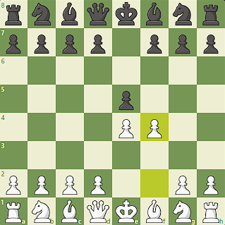
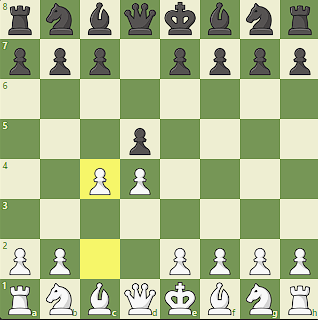
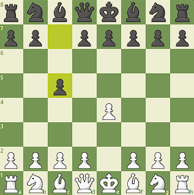
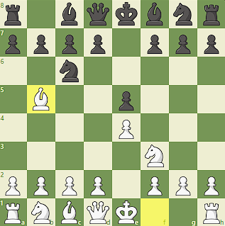
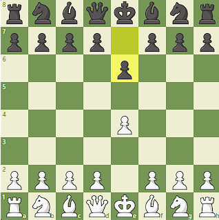
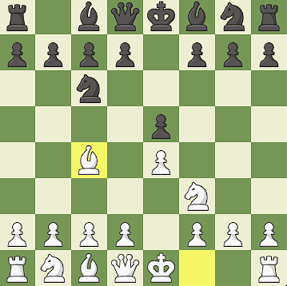
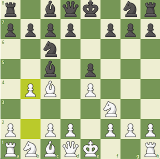

Gambits? What are they?
A gambit is a chess opening in which a player sacrifices material with the hope of achieving a more advantageous position.
King's Gambit:
This is an aggressive opening where White offers a pawn on the f3 square to Black in exchange for control of the center of the board. It was a popular choice in the 19th century but is less commonly played today.
Queen's Gambit:
This is an opening where White offers a pawn on the d4 square to Black in exchange for control of the center of the board. It is a solid and highly respected opening for White.
Sicilian Defense:
This is a popular defense for Black against White's first move of 1.e4. Black offers a pawn on the c5 square in exchange for control of the center and the possibility of a kingside attack.
Ruy Lopez:
This is an opening for White named after a 16th-century Spanish bishop. It involves the move 1.e4, followed by the development of the knight to the c3 square and the bishop to the g5 square, with the aim of attacking Black's kingside.
French Defense:
This is a defense for Black against White's first move of 1.e4. Black occupies the center with the pawn on the e5 square and develops the pieces aggressively, often with the aim of launching a kingside attack.
The Fried Liver Attack:
This gambit is a variation of the Two Knights Defense in which White sacrifices a knight on f7 in order to put pressure on Black's position and attack the black king. It is a highly aggressive and risky opening, but it can catch unprepared opponents off guard and lead to a quick win for White.
The Evans Gambit:
This gambit is a variation of the Giuoco Piano opening in which White sacrifices a pawn on the c3 square in exchange for rapid development and a lead in space. It is a solid and respected opening that has been played by many strong players throughout chess history, and it can catch unprepared opponents off guard and lead to a strong position for White.
